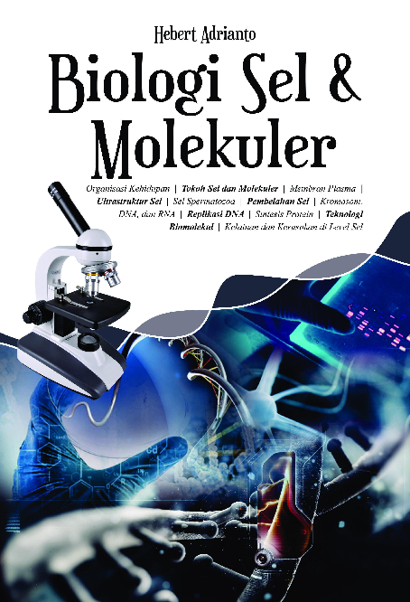

Perkembangan ilmu biologi medik semakin maju dan canggih. Penyakit semakin menarik untuk diteliti dan diungkapkan di level seluler dan molekuler, apalagi didukung dengan teknologi untuk analisis molekuler seperti elektroforesis, PCR, dan sekuencing. Konsep dasar di bidang biologi sel dan molekuler perlu diketahui dan dikuasai oleh mahasiswa kedokteran sebab banyak Fakultas Kedokteran di Indonesia ini menggiatkan mahasiswa semester atas melakukan penelitian di level seluler dan molekuler.
Dari hal tersebut, penulis mencoba menyusun sebuah buku ajar “BIOLOGI SEL DAN MOLEKULER” untuk mahasiswa Fakultas Kedokteran Universitas Ciputra (FKUC) semester satu pada Blok Biomedik 1 dan 6. Buku Ajar ini merupakan materi paling basic dari biologi sel dan molekuler
Kelebihan dari buku ajar ini adalah dilengkapi dengan banyak ilustrasi dari literatur ilmiah dan terpercaya tanpa ada maksud untuk menjiplak/plagiarisme, setiap bab diawali dengan ilustrasi kehidupan sebagai pembuka, informasi up to date penelitian (penyakit tropis) di Indonesia yang dapat memberikan imajinasi dan aplikasi biologi sel dan molekuler kepada mahasiswa, beserta latihan soal untuk menguji pemahaman mahasiswa.